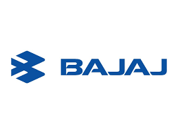
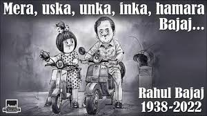
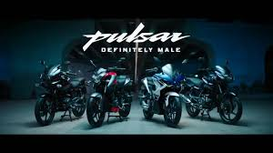

How a legacy brand mastered emotional connection and category creation — from "Hamara Bajaj" nostalgia to Pulsar performance dominance.

Bajaj didn't just sell vehicles — it sold identity, pride, and evolution. From scooters that powered middle-class dreams to Pulsar bikes that defined youth rebellion, Bajaj mastered the art of strategic reinvention.
This case study breaks down two campaigns that defined Indian automotive marketing: Hamara Bajaj — emotional nation-building at scale — and Pulsar: Definitely Male — category creation through bold positioning.
One built universal trust. The other created premium aspiration. Together, they show how to balance legacy with innovation.
In 1989, Bajaj didn't sell scooters — it sold belonging. "Hamara Bajaj" positioned the brand as part of every Indian household, tapping into middle-class aspirations, family values, and national pride.
The iconic jingle and everyday life visuals created instant emotional ownership. Consumers didn't buy Bajaj — they already felt it was theirs.
"Great brands don't ask for loyalty — they create ownership. Hamara Bajaj made every Indian feel like a co-owner of the brand."
As markets evolved, Bajaj adapted the campaign from nostalgia to progress, maintaining emotional equity while staying relevant. This evolution without alienation is marketing mastery.

While competitors fought over mileage, Bajaj created a new category: performance motorcycles. Pulsar wasn't about efficiency — it was about speed, style, and identity.
The bold "Definitely Male" positioning spoke directly to young aspirational riders. Raw visuals, powerful messaging, and a bike that delivered created instant cult status.
"Don't compete in crowded categories — create your own. Pulsar didn't beat competitors; it made them irrelevant by defining a new game."
Perfect product-marketing alignment accelerated adoption. Pulsar built communities, created riding culture, and captured premium market share where none existed before.

"Hamara" created collective belonging that turned customers into brand advocates for generations.
Evolved emotional equity from nostalgia to progress without losing core identity — perfect balance.
Pulsar didn't compete — it created premium performance segment where none existed before.
Marketing promised power, product delivered. This trust accelerated premium adoption massively.
Pulsar created riding tribes and culture — turning customers into passionate brand evangelists.
Hamara caught rising middle class. Pulsar caught youth aspiration. Timing amplified both campaigns.
Bajaj mastered the dual art of emotional connection and category innovation. Hamara Bajaj built universal trust through ownership. Pulsar built premium growth through differentiation.
The genius was balance: one campaign for mass emotional equity, another for premium aspiration. This two-speed strategy created unbeatable market positioning.
For brands: master one clear idea. Make your product live that idea. Time it perfectly with cultural shifts. That's how legends are built.
At Brand Business Talk, we help brands with research, strategy, market insights, and growth recommendations. Let's build your brand growth strategy together.